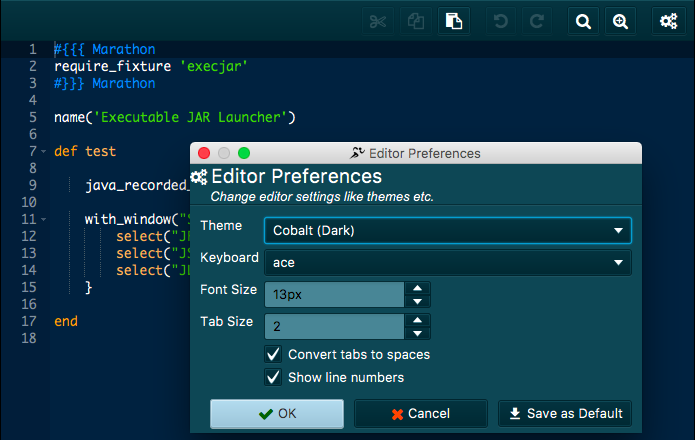
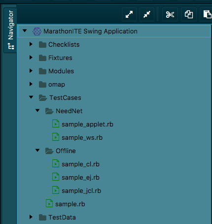
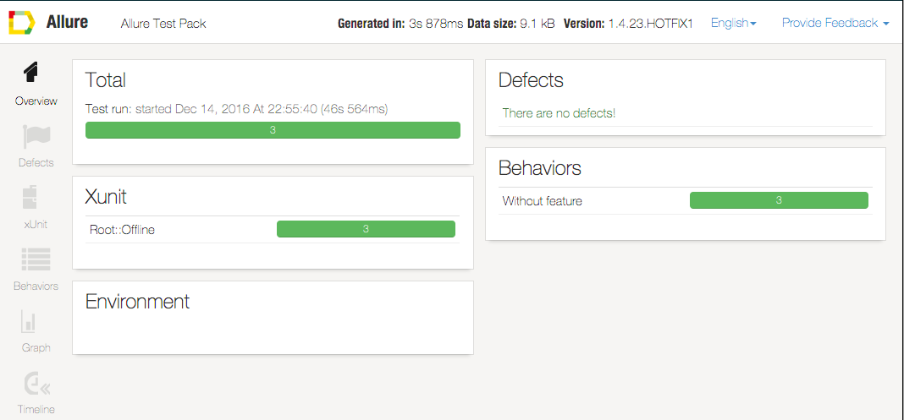
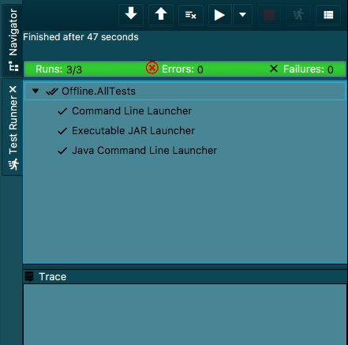

Revamped User Interface
Marathon user interface has been rewritten from the ground up using Java/FX. There were complaints about earlier versions of Marathon that the UI looked dated. We hope you like the new UI.
Support for Web Application Testing (MarathonITE only)
One of the major additions to MarathonITE is support for Web Applications. Whether you want to use Chrome, Firefox or Edge – You can use MarathonITE to record and replay your tests. The recorded tests can also be executed on Internet Explorer and Safari (OSX/Sierra).
Powerful Syntax Highlighting Editor for test scripts and more

Marathon uses ACE web editor framework now. Ace editor has many abilities and modes and one of the most used web editors. The editor supports vi/emacs editor modes, search/replace with regular
expressions, cut/copy and paste and many more features.
Themes for Marathon and Editor
Now, you can select different themes for Marathon UI and the editor. The themes included for Marathon are still in infancy – look forward for better themes. The inbuilt ACE editor themes are beautiful and you can select a theme from Marathon.
Powerful Navigator view

We upgraded the navigator view. From the Navigator you can drag and drop files, delete, reorganise. You can also Hide from view functionality to hide files from the view.
Open files using System editor
From the navigator view, you can open a file using the system editor. You can also open files using the inbuilt text editor instead of the default editor.
Select multiple scripts and execute them as a suite
You can select multiple files from the Navigator, and execute them in the test runner as a suite from the context menu.
Allure Reporting Framework

Marathon uses allure reporting framework to generate javascript enabled, aesthetically pleasing HTML reports. Overview page shows overall test execution statistics with a list of test
parameters. Right section contains top defects grouped by defect message. Defects page gives detailed list of defects revealed during test execution. We distinguish product defects which correspond to failed tests and test defects – correspond to broken tests.Behaviors page groups test data in terms of BDD. You can easily view which features and stories have problems.
Script console

You can execute multiple statements from the script console. Just use Shift+Enter instead of Enter, the script is buffered and executed when you finally press Enter.
Object Map and Object Map Configuration editors (MarathonITE only)
MarathonITE now includes the object map and object map configuration editors. You can edit both in the workspace itself.
Checklist editor
Checklists have been with Marathon to support exploratory testing and semi automatic testing from V3 onwards. The Checklist editor has been updated and integrated into the workspace.
Show reports in the Workspace
Using WebView – Marathon displays the reports within the workspace itself.
BDD style Feature and Story grouping
Now you can group your tests under Features or Stories. They reflect in the generated reports. The Feature and Story details are stored in JSON file format.
Feature and Story Editors and Views (MarathonITE only)
MarathonITE includes editors and views for Features and Stories. You can use drag and drop, or the toolbar buttons to construct a story or a feature.
Group Tests into a Test Suite
You can group tests, features, stories (and even suites) into a Test suite. The test suite details are stored in JSON file format that can be edited using the text editor.

(MarathonITE
only)
You can use the suite editor to build the suite and reorder the tests within a suite.
Revamped TestRunner

Marathon TestRunner view has been redesigned. Though the view still follows green/red bar philosophy from JUnit, but much more cleaner.
Saving TestRunner history
Using Marathon you can save the test runner history. You can name them and rerun them whenever you require.
TestCase meta data
One of the most requested features – You can have Marathon integrate with your test management system and bug reporting system. Marathon test case can be assigned a ID that can be used to link to the TMS. You can assign tests to Issues and link them back to your bug management system.
Executing tests in Batch Mode
You can execute tests in batch mode. You can select individual tests, features, stories, suites or saved test runner history while running in the batch mode.